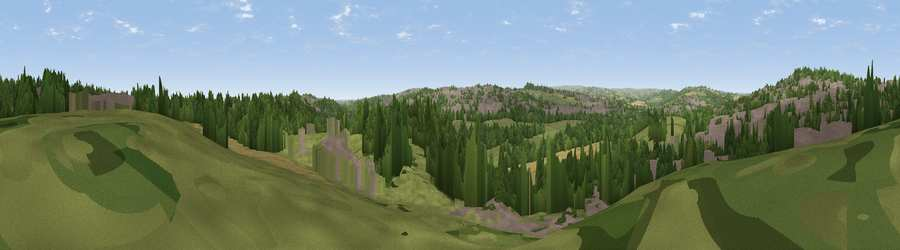

Viewpoint near Mapplewell
#28342 in England · top 49% of its area beats it · near MapplewellWhere it is
The exact computed spot (SE 33525 09425). Click the marker for map links.
The view, rendered

A 360° render of this exact spot computed from the terrain model, tree cover and land cover — summer colours, afternoon light, calibrated against photographs of famous viewpoints. Real trees, hedges and buildings will differ in detail.
The panorama
Grey silhouette: terrain skyline in each direction (720 bearings, Earth curvature and refraction included). Dashed green: skyline with trees (+15 m) and buildings (+8 m) as obstacles. Blue strip: how far the ground is visible on each bearing.
Where the view opens
Wedge length = distance to the farthest visible ground on that bearing (vegetation-aware). Rings at 10, 25 and 50 km.
What fills the view
30% woodland · 30% built-up · 28% grassland · 12% cropland
Angular shares of the visible panorama (visual magnitude), not map area. Landscape diversity 0.58 (0–1 Shannon).
Key numbers
More beautiful places nearby
The staircase of upgrades: each row has a higher view potential than everything closer. Driving times are estimates from straight-line distance, calibrated against real road routing — check an actual route before setting out.
| Place | Direction | Drive | Score |
|---|---|---|---|
| Viewpoint near Woolley | NNW · 3 km | ~8 min | 66.2 |
| Pool Hill | W · 9 km | ~17 min | 66.6 |
| Viewpoint near Hoylandswaine | WSW · 9 km | ~18 min | 72.7 |
| Viewpoint near Green Moor | SSW · 12 km | ~22 min | 73.1 |
| Viewpoint near Wharncliffe Side | S · 13 km | ~24 min | 75.0 |
| Viewpoint near Wharncliffe Side | S · 13 km | ~24 min | 75.2 |
| Viewpoint near Greenfield | W · 34 km | ~52 min | 76.0 |
| Viewpoint near Carrbrook | WSW · 36 km | ~54 min | 77.1 |
53.58035, -1.49512 · source: screening · position refined by local search. Computed location — check access rights before visiting.